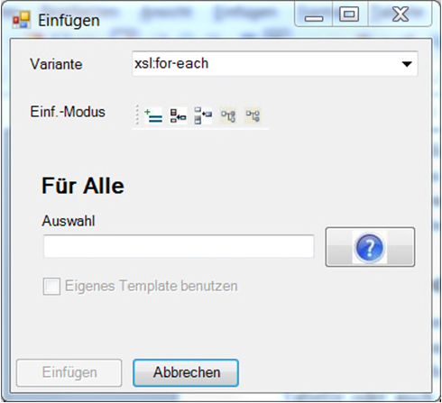
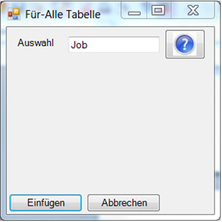
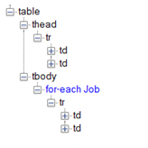

Logical Elements
In addition to visible elements, which are used to format the report output, the ReportDesigner also provides a range of logical elements, which can be used to embed the data from a job list or tool dataset in the report output.
Note that the underlying dataset of e.g. a job list is hierarchically structured in its own right. The ReportDesigner helps the user insert placeholders and loops by only making properties and possible loops belonging to the current data element available for selection, depending on the context.
Placeholders
Job lists, jobs, tools and other data elements have specific properties such as designation, numbering, length, color etc.
Depending on the context in the report dataset, the user can insert individual properties of, for example, a job into the report layout using a placeholder ( xsl:value-of). The possible job properties are made available in the selection dialog, and are then applied to the placeholder's select attribute.
Placeholders can be inserted from the Insert > Value Of ... menu item.
The possible attributes, in this case those of the tool, are selected depending on the context in the report dataset.
Sometimes it may be necessary to specifically access properties of the superordinate element or other elements in the report dataset, or formatting functions. The ReportDesigner uses the xpath query language for this purpose, which means that the user can enter arbitrary other xpath expressions in the select attribute with knowledge of the structure of the dataset.
xsl and xpath offer an enormous range of options, which are not described in further detail here. A number of tutorials and a wide range of documentation are available on the Internet.
Loops and Repetition
Every report dataset is built around a hierarchical structure. A job list, for example, consists of a list of individual jobs and an additional list of used tools.
A list of jobs can be visualized in a number of ways, e.g. as an overview in a table or as a list of pages, each of which shows an individual job.
For display, it is first necessary to create a loop to cover all jobs in the job list. In the first example case, this loop is used to display the table rows.
In the second case, each iteration of the loop displays an entire page. Loops are available under the Insert > For all ... menu item.
|  |
Because tables with a loop structure are required in many cases, the Tools menu contains the Dynamic table menu item to bring these common steps together in one place.
|  |
The following structure is inserted:
|  |